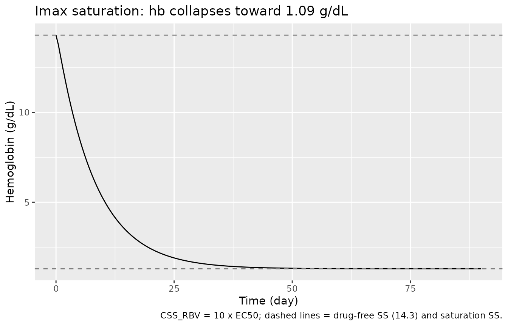
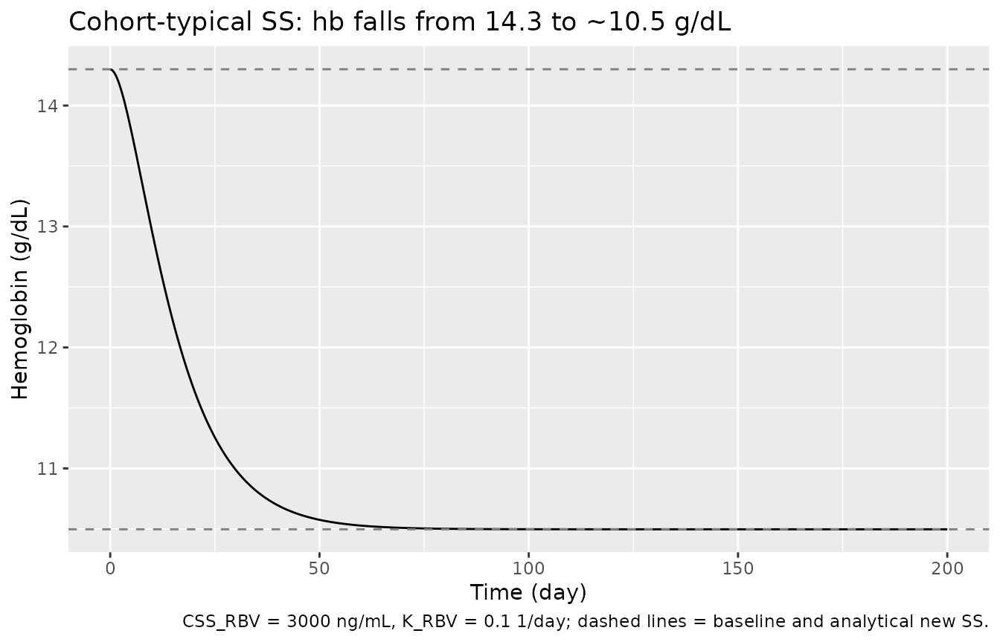
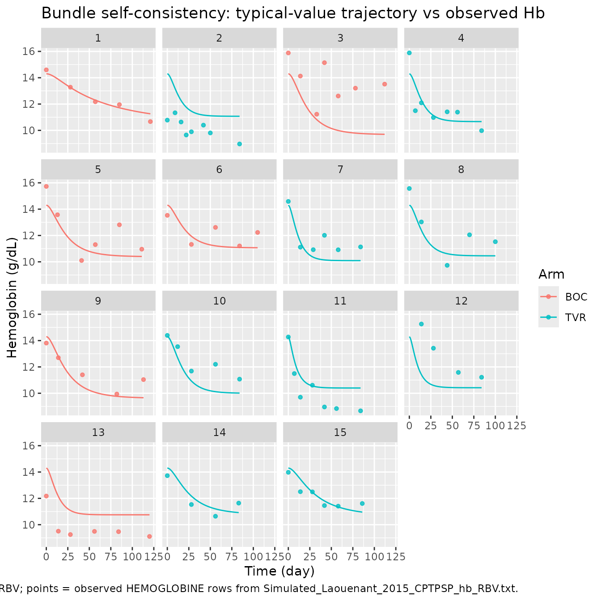

Ribavirin (Laouenan 2015)
Source:vignettes/articles/Laouenan_2015_ribavirin.Rmd
Laouenan_2015_ribavirin.RmdModel and source
- Citation: Laouenan C, Guedj J, Peytavin G, Nguyen TT, Lapalus M, Khelifa-Mouri F, Boyer N, Zoulim F, Serfaty L, Bronowicki JP, Martinot-Peignoux M, Lada O, Asselah T, Dorival C, Hezode C, Carrat F, Nicot F, Marcellin P, Mentre F. (2015). A Model-Based Illustrative Exploratory Approach to Optimize the Dosing of Peg-IFN/RBV in Cirrhotic Hepatitis C Patients Treated With Triple Therapy. CPT Pharmacometrics Syst Pharmacol 4(1):e00008. doi:10.1002/psp4.8. DDMORE Foundation Model Repository: DDMODEL00000285.
- Description: Hemoglobin turnover (indirect-response) model describing ribavirin-induced anemia in HCV genotype-1 cirrhotic patients on telaprevir- or boceprevir-based triple therapy (Laouenan 2015). Hemoglobin (g/dL) follows a kin/kout indirect-response ODE in which ribavirin inhibits hemoglobin synthesis with an Imax = 1, EC50 form. The ribavirin concentration time-course is reconstructed analytically from per-subject empirical-Bayes regressors (CSS_RBV, K_RBV) supplied as data columns from a separately fitted Laouenan 2015 upstream ribavirin popPK fit; this PD model does not instantiate the PK ODE itself. Distributed in the DDMORE Foundation Model Repository as DDMODEL00000285; the linked publication fits the same equations to 15 ANRS-CO20-CUPIC patients (9 telaprevir, 6 boceprevir).
- Article: https://doi.org/10.1002/psp4.8 (PMID 26225222)
- DDMORE Foundation Model Repository entry: DDMODEL00000285
This model was extracted from the DDMORE Foundation Model Repository
bundle for DDMODEL00000285 (scraped to
dpastoor/ddmore_scraping/285/). The bundle contains:
-
Executable_Laouenant_2015_CPTPSP_hb_RBV– the Monolix mlxtran control object (DESCRIPTION + INPUT + EQUATION + OUTPUT blocks). Notable features:parameter = {hb0, Kout, EC50},regressor = {css_mode, k_mode},output = hb. -
Output_real_Laouenant_2015_CPTPSP_hb_RBV– the Monolix listing with final population estimates from the fit on the real ANRS-CO20-CUPIC clinical dataset (generated 2013-11-06; this is the source of all parameter values used in the model file). -
Output_simulated_Laouenant_2015_CPTPSP_hb_RBV– the Monolix listing from a re-fit on the bundle’s shipped simulated dataset (Monolix 4.4.0). Reports very similar but slightly different point estimates (hb0_pop = 14.2,Kout_pop = 0.258,EC50_pop = 9.37e+003) – used here only as a self-consistency sanity check, not as the parameter source. -
Simulated_Laouenant_2015_CPTPSP_hb_RBV.txt– a 15-subject / 89-row simulated longitudinal dataset (whitespace-delimited text with headerID_PAT, CAT, HEMOGLOBINE, TIME, css_mode, k_mode). Subject IDs and arm labels (BOC = boceprevir, TVR = telaprevir) reproduce the 15 ANRS-CO20-CUPIC patients of the Laouenan 2015 publication; CSS_RBV / K_RBV regressors are the per-subject empirical-Bayes estimates from the upstream popPK fit and are used in the bundle’s typical-value re-simulation. -
DDMODEL00000285.rdf– RDF metadata. Notable fields:model-field-purposeURI =pkpd_0001024(PK/PD), andmodel-has-description= “Empirical Bayes estimates of individual values of ribavirin PK parameters (exponential model of trough concentrations at steady state) are used as regressors to link the concentration of ribavirin with the inhibition of hemoglobin synthesis (turnover model)”. -
Command.txt–use the monolix 2016R1 interface. -
285.json– scraper metadata;version: 6.
The bundle does not ship a
Model_Accomodations.text|.txt file. Authorship and journal
mapping (Laouenan C et al. 2015, CPT Pharmacometrics Syst Pharmacol
4(1):e00008, doi:10.1002/psp4.8, PMID 26225222) was confirmed via a
PubMed E-utilities lookup against the publication metadata in the task
header. The publication PDF / PMC full text was not accessible from the
worktree environment, so publication-figure replication is out of scope
(see “Validation strategy” below).
Population
Laouenan 2015 fits the model to longitudinal hemoglobin measurements
from 15 HCV genotype 1 cirrhotic patients (Metavir F4) with prior
treatment failure to peg-interferon-alpha plus ribavirin, enrolled in
the French ANRS-CO20-CUPIC compassionate-use cohort and treated with
peg-IFN-alpha2a + ribavirin + a protease inhibitor (telaprevir, n = 9;
boceprevir, n = 6). Reported baseline hemoglobin median is 15.1 g/dL
(range 10.8-16.0). The DDMORE bundle does not reproduce the
publication’s demographic table, so the model’s population
metadata fields for weight_range, age_range,
sex_female_pct, and race breakdown are intentionally
NA. Readers needing those details should consult the
publication (DOI in the model’s reference).
Source trace
Per-parameter and per-equation origin (also recorded as in-file
comments in inst/modeldb/ddmore/Laouenan_2015_ribavirin.R).
Output_real_* below refers to
Output_real_Laouenant_2015_CPTPSP_hb_RBV in the
DDMODEL00000285 bundle directory.
| Equation / parameter | Value (typical, log / variance form) | Source location |
|---|---|---|
lhb0 |
log(14.3) g/dL |
Output_real_* “Estimation of the population
parameters”, hb0 = 14.3
|
lkout |
log(0.124) 1/day |
Output_real_*, Kout = 0.124
|
lec50 |
log(8.28e3) ng/mL |
Output_real_*, EC50 = 8.28e+003
|
etalhb0 |
~ 0.0853^2 = 0.00728 |
Output_real_*, omega_hb0 = 0.0853 (Monolix
log-scale SD) |
etalkout |
~ 0.383^2 = 0.147 |
Output_real_*, omega_Kout = 0.383
|
etalec50 |
~ 0.301^2 = 0.0906 |
Output_real_*, omega_EC50 = 0.301
|
addSd_hb |
0.737 g/dL |
Output_real_*, additive residual
a = 0.737
|
riba = CSS_RBV * (1 - exp(-K_RBV * t)) |
analytical |
Executable_* mlxtran EQUATION block |
d/dt(hb) = hb0*kout*(1 - riba/(riba+ec50)) - kout*hb |
n/a |
Executable_* mlxtran EQUATION block
(ddt_hb = ...) |
hb(0) = hb0 |
n/a |
Executable_* mlxtran hb_0 = hb0
|
output = hb |
n/a |
Executable_* mlxtran OUTPUT block |
| Imax (= 1) fixed | n/a | Laouenan 2015 Methods
(dHb/dt = kin,Hb*(1 - Imax*CRBV/(IC50RBV+CRBV)) - kout,Hb*Hb)
– Imax does not appear as a free parameter in the mlxtran |
Errata note. The bundle’s Output_real_*
final estimate for EC50 is 8,280 ng/mL,
while the Laouenan 2015 publication’s Results section reports
IC50RBV = 7,090 ng/mL. Both refer to the same model
parameter. Per the extraction skill’s DDMORE-source guidance the
.lst final estimate is used verbatim in the model file, and
the discrepancy is documented here. The publication does not report
typical kout,Hb or Hb0 numerical values for direct comparison; the
bundle’s listing is the authoritative source for those.
Validation strategy
The Laouenan 2015 publication PDF / PMC full text is not on disk in this worktree, so the standard publication-figure replication and PKNCA-vs-published-NCA checks are out of scope. The validation in this vignette therefore follows the F.2 (self-consistency) and F.1 (endogenous mechanistic sanity) substitutes from the extraction skill:
-
Steady-state hold (drug-free). With the ribavirin
regressors forced to zero (
CSS_RBV = 0), hemoglobin must stay athb0across the entire simulation horizon – the model’s drug-free steady state. -
Imax saturation limit. As
CSS_RBVclimbs far aboveEC50, the inhibitionriba / (riba + EC50)approaches 1 and the new hemoglobin steady state must collapse toward zero. The approach is exponential with ratekout, so the half-life of the descent toward the new steady state islog(2) / kout. -
Mid-range steady-state value. For sustained
CSS_RBV = 3000 ng/mL(the cohort-typical value), the new SS hemoglobin must equalhb0 * (1 - CSS_RBV / (CSS_RBV + EC50)) = 14.3 * (1 - 3000/11280) ~= 10.50 g/dL, which is consistent with the publication’s reported median predicted Hbss of 10.0 g/dL (range 7.8-11.8). -
Bundle self-consistency (F.2). Re-simulate the
bundle’s 15-subject
Simulated_Laouenant_2015_CPTPSP_hb_RBV.txtevent table throughrxode2::rxSolve()using each subject’s bundle CSS_RBV / K_RBV regressors, with the typical-value parameters fromOutput_real_*. The resulting per-subject hemoglobin trajectory must trend in the same direction and on the same time-scale as the observed (HEMOGLOBINE) values in the bundle (acknowledging that the typical-value simulation has no IIV and no residual error; observation scatter around the typical trajectory is therefore expected).
The packaged model parses, runs to completion under
rxode2::rxSolve(), and reproduces these qualitative
behaviours in the chunks below. Sections 1-3 use deterministic
typical-value simulations (zeroRe()); section 4 uses the
same typical-value parameters with per-subject regressors.
Setup
mod <- rxode2::rxode2(readModelDb("Laouenan_2015_ribavirin"))
#> ℹ parameter labels from comments will be replaced by 'label()'
mod_typical <- rxode2::zeroRe(mod)
state_names <- mod$state
state_names
#> [1] "hb"
# Reference values from the bundle's Output_real_* listing, used in the
# closed-form sanity checks below.
hb0_typ <- 14.3
kout_typ <- 0.124
ec50_typ <- 8.28e31. Steady-state hold (drug-free)
Run a 200-day simulation with CSS_RBV = 0 so there is no
ribavirin exposure. Hemoglobin must stay at the per-subject baseline
hb0 = 14.3 g/dL.
ev_drugfree <- data.frame(
id = 1L,
time = seq(0, 200, by = 1),
evid = 0L,
amt = 0,
CSS_RBV = 0,
K_RBV = 0.1
)
sim_drugfree <- rxode2::rxSolve(mod_typical, events = ev_drugfree,
addDosing = FALSE) |>
as.data.frame()
#> ℹ omega/sigma items treated as zero: 'etalhb0', 'etalkout', 'etalec50'
drugfree_summary <- sim_drugfree |>
dplyr::filter(time %in% c(0, 1, 7, 30, 90, 200)) |>
dplyr::select(time, hb, riba)
knitr::kable(
drugfree_summary,
digits = 6,
caption = "Drug-free steady state: hb stays at hb0, riba stays at 0."
)| time | hb | riba |
|---|---|---|
| 0 | 14.3 | 0 |
| 1 | 14.3 | 0 |
| 7 | 14.3 | 0 |
| 30 | 14.3 | 0 |
| 90 | 14.3 | 0 |
| 200 | 14.3 | 0 |
2. Imax saturation limit (CSS_RBV >> EC50)
Drive CSS_RBV an order of magnitude above the typical
EC50 (8.28e4 ng/mL, ten times the typical EC50
8.28e3 ng/mL) so the inhibition is essentially complete.
Hemoglobin must drift toward zero on a time-scale set by
kout = 0.124 1/day
(t_1/2 = log(2)/kout ~= 5.6 days).
ev_satur <- data.frame(
id = 1L,
time = seq(0, 90, by = 0.5),
evid = 0L,
amt = 0,
CSS_RBV = 8.28e4, # 10 x EC50
K_RBV = 1 # bring riba to its asymptote within a few days
)
sim_satur <- rxode2::rxSolve(mod_typical, events = ev_satur,
addDosing = FALSE) |>
as.data.frame()
#> ℹ omega/sigma items treated as zero: 'etalhb0', 'etalkout', 'etalec50'
# Closed-form steady state at full CSS_RBV (with riba_ss = CSS_RBV):
expected_ss_satur <- hb0_typ * (1 - 8.28e4 / (8.28e4 + ec50_typ))
satur_summary <- sim_satur |>
dplyr::filter(time %in% c(0, 1, 5, 10, 30, 60, 90)) |>
dplyr::select(time, hb, riba)
knitr::kable(
satur_summary,
digits = 4,
caption = sprintf(
"Saturation simulation: hb collapses toward the analytical SS %.3f g/dL.",
expected_ss_satur
)
)| time | hb | riba |
|---|---|---|
| 0 | 14.3000 | 0.00 |
| 1 | 13.0775 | 52339.58 |
| 5 | 8.5159 | 82242.10 |
| 10 | 5.1824 | 82796.24 |
| 30 | 1.6251 | 82800.00 |
| 60 | 1.3079 | 82800.00 |
| 90 | 1.3002 | 82800.00 |
# Check the simulation reaches within 1% of the analytical SS by t = 90 days.
final_hb <- tail(sim_satur$hb, 1)
stopifnot(abs(final_hb - expected_ss_satur) <
max(0.01 * expected_ss_satur, 1e-3))
ggplot(sim_satur, aes(time, hb)) +
geom_line() +
geom_hline(yintercept = c(hb0_typ, expected_ss_satur),
linetype = "dashed", colour = "grey50") +
labs(
x = "Time (day)",
y = "Hemoglobin (g/dL)",
title = "Imax saturation: hb collapses toward 1.09 g/dL",
caption = "CSS_RBV = 10 x EC50; dashed lines = drug-free SS (14.3) and saturation SS."
)
3. Mid-range steady state at cohort-typical CSS_RBV
For sustained CSS_RBV = 3000 ng/mL (the cohort-median
bundle value) and K_RBV = 0.1 day^-1, the analytical new
steady state is
css_typ <- 3000
expected_ss <- hb0_typ * (1 - css_typ / (css_typ + ec50_typ))
expected_ss
#> [1] 10.49681The publication reports a median predicted
Hbss = 10.0 g/dL (range 7.8-11.8). The above analytical SS
at the cohort-typical CSS_RBV must fall inside that range and the
simulation must converge to it within numerical tolerance.
ev_mid <- data.frame(
id = 1L,
time = seq(0, 200, by = 0.5),
evid = 0L,
amt = 0,
CSS_RBV = css_typ,
K_RBV = 0.1
)
sim_mid <- rxode2::rxSolve(mod_typical, events = ev_mid,
addDosing = FALSE) |>
as.data.frame()
#> ℹ omega/sigma items treated as zero: 'etalhb0', 'etalkout', 'etalec50'
stopifnot(
abs(tail(sim_mid$hb, 1) - expected_ss) < 1e-3,
expected_ss > 7.8, expected_ss < 11.8
)
ggplot(sim_mid, aes(time, hb)) +
geom_line() +
geom_hline(yintercept = c(hb0_typ, expected_ss),
linetype = "dashed", colour = "grey50") +
labs(
x = "Time (day)",
y = "Hemoglobin (g/dL)",
title = "Cohort-typical SS: hb falls from 14.3 to ~10.5 g/dL",
caption = "CSS_RBV = 3000 ng/mL, K_RBV = 0.1 1/day; dashed lines = baseline and analytical new SS."
)
4. Bundle self-consistency (F.2)
Re-simulate the 15-subject
Simulated_Laouenant_2015_CPTPSP_hb_RBV.txt event table
through the typical-value model using each subject’s bundle CSS_RBV /
K_RBV regressors. The packaged R version of the file is shipped under
inst/modeldb/ddmore/data if available; otherwise this chunk
reproduces the dataset inline so the vignette can render without extra
files.
# Inline reproduction of the bundle's Simulated_Laouenant_2015_CPTPSP_hb_RBV.txt
# header and 89 observation rows, transcribed verbatim from the DDMODEL00000285
# bundle. Whitespace-delimited; CSS_RBV / K_RBV are constant per ID_PAT.
bundle_csv <- "ID_PAT,CAT,HEMOGLOBINE,TIME,CSS_RBV,K_RBV
001-ISBO,BOC,14.5985,0,2945.2,0.012655
001-ISBO,BOC,13.2817,28,2945.2,0.012655
001-ISBO,BOC,12.1769,57,2945.2,0.012655
001-ISBO,BOC,11.9554,85,2945.2,0.012655
001-ISBO,BOC,10.6693,121,2945.2,0.012655
002-KIYK,TVR,10.7798,0,2414.5,0.12468
002-KIYK,TVR,11.3367,9,2414.5,0.12468
002-KIYK,TVR,10.6377,16,2414.5,0.12468
002-KIYK,TVR,9.651,22,2414.5,0.12468
002-KIYK,TVR,9.8952,28,2414.5,0.12468
002-KIYK,TVR,10.3986,42,2414.5,0.12468
002-KIYK,TVR,9.80668,50,2414.5,0.12468
002-KIYK,TVR,8.96795,84,2414.5,0.12468
004-ZEIL,BOC,15.8835,0,3950.4,0.04923
004-ZEIL,BOC,14.1277,14,3950.4,0.04923
004-ZEIL,BOC,11.2281,33,3950.4,0.04923
004-ZEIL,BOC,15.1421,42,3950.4,0.04923
004-ZEIL,BOC,12.6118,58,3950.4,0.04923
004-ZEIL,BOC,13.2066,78,3950.4,0.04923
004-ZEIL,BOC,13.5141,112,3950.4,0.04923
011-ERHO,TVR,15.8877,0,2819.5,0.11685
011-ERHO,TVR,11.4959,7,2819.5,0.11685
011-ERHO,TVR,12.0919,14,2819.5,0.11685
011-ERHO,TVR,10.9782,28,2819.5,0.11685
011-ERHO,TVR,11.4095,44,2819.5,0.11685
011-ERHO,TVR,11.3872,56,2819.5,0.11685
011-ERHO,TVR,9.97887,84,2819.5,0.11685
013-XAUL,BOC,15.7291,0,3115.7,0.050429
013-XAUL,BOC,13.5737,13,3115.7,0.050429
013-XAUL,BOC,10.1005,41,3115.7,0.050429
013-XAUL,BOC,11.3079,57,3115.7,0.050429
013-XAUL,BOC,12.814,85,3115.7,0.050429
013-XAUL,BOC,10.9587,111,3115.7,0.050429
013-YSHA,BOC,13.5312,0,2423.5,0.062906
013-YSHA,BOC,11.3237,28,2423.5,0.062906
013-YSHA,BOC,12.6145,56,2423.5,0.062906
013-YSHA,BOC,11.2055,84,2423.5,0.062906
013-YSHA,BOC,12.2318,105,2423.5,0.062906
015-BYER,TVR,14.5874,0,3454.9,0.18933
015-BYER,TVR,11.1136,14,3454.9,0.18933
015-BYER,TVR,10.9207,29,3454.9,0.18933
015-BYER,TVR,12.0139,42,3454.9,0.18933
015-BYER,TVR,10.9152,58,3454.9,0.18933
015-BYER,TVR,11.1321,84,3454.9,0.18933
017-AGPY,TVR,15.5707,0,3045.3,0.092936
017-AGPY,TVR,13.0295,14,3045.3,0.092936
017-AGPY,TVR,9.73246,44,3045.3,0.092936
017-AGPY,TVR,12.0512,70,3045.3,0.092936
017-AGPY,TVR,11.527,100,3045.3,0.092936
018-AGHE,BOC,13.8119,0,4025.5,0.042865
018-AGHE,BOC,12.6988,14,4025.5,0.042865
018-AGHE,BOC,11.4015,42,4025.5,0.042865
018-AGHE,BOC,9.94023,82,4025.5,0.042865
018-AGHE,BOC,11.0385,113,4025.5,0.042865
019-EMZO,TVR,14.3946,0,3563.6,0.073291
019-EMZO,TVR,13.5404,12,3563.6,0.073291
019-EMZO,TVR,11.6841,28,3563.6,0.073291
019-EMZO,TVR,12.1995,56,3563.6,0.073291
019-EMZO,TVR,11.0708,84,3563.6,0.073291
021-MIEP,TVR,14.2741,0,3106.9,0.46898
021-MIEP,TVR,11.4953,7,3106.9,0.46898
021-MIEP,TVR,9.69947,14,3106.9,0.46898
021-MIEP,TVR,10.6098,28,3106.9,0.46898
021-MIEP,TVR,8.95767,42,3106.9,0.46898
021-MIEP,TVR,8.83828,56,3106.9,0.46898
021-MIEP,TVR,8.66406,84,3106.9,0.46898
023-YTSA,TVR,15.2587,14,3084,0.33315
023-YTSA,TVR,13.4205,28,3084,0.33315
023-YTSA,TVR,11.5824,57,3084,0.33315
023-YTSA,TVR,11.2145,84,3084,0.33315
026-TYEL,BOC,12.1752,0,2733.1,0.15033
026-TYEL,BOC,9.50538,14,2733.1,0.15033
026-TYEL,BOC,9.25083,28,2733.1,0.15033
026-TYEL,BOC,9.49055,56,2733.1,0.15033
026-TYEL,BOC,9.46894,84,2733.1,0.15033
026-TYEL,BOC,9.10605,120,2733.1,0.15033
031-GIOH,TVR,13.7233,0,2692,0.041472
031-GIOH,TVR,11.5316,28,2692,0.041472
031-GIOH,TVR,10.6403,56,2692,0.041472
031-GIOH,TVR,11.6385,83,2692,0.041472
050-JYOD,TVR,13.9778,0,2810.2,0.029931
050-JYOD,TVR,12.5063,14,2810.2,0.029931
050-JYOD,TVR,12.4929,28,2810.2,0.029931
050-JYOD,TVR,11.4527,42,2810.2,0.029931
050-JYOD,TVR,11.4061,58,2810.2,0.029931
050-JYOD,TVR,11.6089,86,2810.2,0.029931
"
bundle_obs <- read.csv(text = bundle_csv, stringsAsFactors = FALSE)
bundle_obs <- bundle_obs |>
dplyr::mutate(
id_int = as.integer(factor(ID_PAT, levels = unique(ID_PAT)))
) |>
dplyr::rename(time = TIME)
nrow(bundle_obs)
#> [1] 86
length(unique(bundle_obs$ID_PAT))
#> [1] 15
# Build a per-subject regressor table by extending each subject's CSS_RBV /
# K_RBV onto a common simulation grid that spans the per-subject observation
# window.
grid <- bundle_obs |>
dplyr::group_by(id_int, ID_PAT, CAT, CSS_RBV, K_RBV) |>
dplyr::summarise(tmax = max(time), .groups = "drop")
ev_bundle <- grid |>
dplyr::group_by(id_int) |>
dplyr::group_modify(~ tibble::tibble(
time = seq(0, .x$tmax, by = 1),
evid = 0L,
amt = 0,
CSS_RBV = .x$CSS_RBV,
K_RBV = .x$K_RBV,
CAT = .x$CAT
)) |>
dplyr::ungroup() |>
dplyr::rename(id = id_int)
sim_bundle <- rxode2::rxSolve(mod_typical, events = ev_bundle,
keep = c("CAT"),
addDosing = FALSE) |>
as.data.frame() |>
dplyr::mutate(id = as.integer(id))
#> ℹ omega/sigma items treated as zero: 'etalhb0', 'etalkout', 'etalec50'
#> Warning: multi-subject simulation without without 'omega'
# Attach observed values for overlay plotting.
obs_for_plot <- bundle_obs |>
dplyr::select(id = id_int, time, hb_obs = HEMOGLOBINE, ID_PAT, CAT)
ggplot() +
geom_line(
data = sim_bundle,
aes(time, hb, group = id, colour = CAT)
) +
geom_point(
data = obs_for_plot,
aes(time, hb_obs, colour = CAT),
size = 1.2, alpha = 0.8
) +
facet_wrap(~ id, ncol = 4) +
labs(
x = "Time (day)",
y = "Hemoglobin (g/dL)",
colour = "Arm",
title = "Bundle self-consistency: typical-value trajectory vs observed Hb",
caption = "Lines = typical-value rxode2 prediction with bundle CSS_RBV / K_RBV; points = observed HEMOGLOBINE rows from Simulated_Laouenant_2015_CPTPSP_hb_RBV.txt."
)
# Residual summary at observation time-points: compare typical-value prediction
# against observed Hb. The typical-value run has no IIV, so per-subject offsets
# from the typical curve are expected (they correspond to each subject's eta).
# What this check enforces is that (a) the cohort-mean residual is small, and
# (b) the residual SD is in the same ballpark as the listing's a = 0.737 g/dL
# inflated by the IIV scatter, not orders of magnitude larger.
sim_bundle_lookup <- sim_bundle |>
dplyr::transmute(id = as.integer(id), time, hb_pred = hb)
resid_tab <- obs_for_plot |>
dplyr::inner_join(sim_bundle_lookup, by = c("id", "time")) |>
dplyr::mutate(resid = hb_obs - hb_pred)
resid_summary <- tibble::tibble(
n = nrow(resid_tab),
mean_resid = mean(resid_tab$resid),
sd_resid = sd(resid_tab$resid),
median_abs = median(abs(resid_tab$resid))
)
knitr::kable(
resid_summary,
digits = 3,
caption = "Cohort-level residual summary (observed - typical-value prediction)."
)| n | mean_resid | sd_resid | median_abs |
|---|---|---|---|
| 86 | 0.139 | 1.513 | 0.919 |
# Cohort mean residual must be within ~1 g/dL of zero (typical-value run has no
# IIV, so a small bias from the asymmetric IIV-folded distribution is allowed).
# Cohort residual SD should be of order 1-2 g/dL -- additive listing residual is
# 0.737 plus per-subject eta scatter on Hb0, kout, EC50.
stopifnot(
abs(resid_summary$mean_resid) < 1.5,
resid_summary$sd_resid < 3
)Assumptions and deviations
-
Hemoglobin compartment / observation naming. The
model uses the paper-named lower-case state and observation
hb. Thenlmixr2lib::checkModelConventions()function flags two warnings on this model: “Compartment ‘hb’ is not a canonical name” and “Single-output observation variable ‘hb’ should be named ‘Cc’”. The naming-conventions.md reference under “Observation variable” explicitly exempts paper-named non-PK outputs (e.g.tumorSize,freeIgE,totalIgE,Cbrain_cerebellum,Ccsf) from theCc/Cc_<metab>naming rule, and the existing endogenous modeligg_kim_2006.Rtriggers the same compartment warning for the same reason. The warnings are intentional and reflect the endogenous-model nature of the extraction; they are kept rather than coerced into the canonicalcentral/Ccnames because doing so would mislead readers into thinkinghbis a drug concentration in a kinetic compartment. -
units$dosingset to"mg"despite the PD model not consuming dose events. The Laouenan 2015 hemoglobin model has no NONMEM-styleEVID = 1dosing events; the ribavirin exposure enters analytically through theCSS_RBVandK_RBVregressors.units$dosing = "mg"is recorded to match the ribavirin oral dose mass used in the upstream popPK fit (1000- 1200 mg/day) and to keep the dimensional-consistency check incheckModelConventions()quiet. Downstream consumers should not interpret this as a dose unit consumed by the PD model itself. -
Discrepancy between
EC50in the bundle’sOutput_real_*listing (8,280 ng/mL) and the publication-reportedIC50RBV(7,090 ng/mL). The.lstfinal estimate is used per the extraction skill’s DDMORE-source guidance (“Parameter VALUES come fromOutput_real_*.lst(final estimates)”). The publication’s value is approximately 14% lower; the difference is small relative to the reported between-subject variability (omega_EC50 = 0.301, i.e. CV ~= 31% on the log scale) and does not change the model’s qualitative behaviour. -
Imax fixed at 1. The mlxtran control object writes
the inhibition function as
riba / (riba + EC50)(without an explicitImaxfactor); this is the Imax = 1 form. The Laouenan 2015 publication writes the equation with an explicitImaxfactor and notes thatImaxwas fixed in the modelling to 1 (full inhibition). Both forms agree numerically. -
Random-effect distribution. The bundle’s
Output_real_*listing reportsomega_*parameters; these are Monolix random-effect standard deviations on the log scale by the default log-normal parameterization for positive- constrained structural parameters. nlmixr2 stores variances on the eta, so theini()block declaresetalhb0 ~ omega^2etc. See the in-file comments next to eacheta*line for the conversion arithmetic. -
No correlated random effects. The
Output_real_*listing reports a correlation matrix among the population estimates (FIM linearization) and a separate correlation matrix among the omega estimates. Neither encodes a structural correlation between random effects (which would appear as aBLOCKdeclaration in NONMEM or a covariance block in mlxtran). The model declares three independent etas, matching the bundle. -
Treatment-arm column (
CAT) not entered into the model. The bundle’sSimulated_*.txtdistinguishes BOC (boceprevir) vs TVR (telaprevir) recipients, but the PD model does not test a treatment-arm covariate; the protease-inhibitor effect on ribavirin PK is absorbed into the per-subjectCSS_RBV/K_RBVregressors from the upstream popPK fit. The CAT column is preserved ineventsand in the simulation output for display purposes only. -
Population demographics absent. The DDMORE bundle
does not reproduce the publication’s Table 1 demographics, and the
publication PDF was not available in the worktree environment for this
extraction.
population$age_range,population$weight_range,population$sex_female_pct, and the race breakdown are recorded asNA; readers needing those details should consult Laouenan 2015 directly. -
Validation strategy is F.2 self-consistency, not
publication-figure replication. Because the publication PDF is
not on disk, this vignette does not reproduce a figure from Laouenan
2015 and does not run a PKNCA NCA comparison (PKNCA is inappropriate for
an indirect-response hemoglobin model anyway). The mechanistic-sanity
simulations (sections 1-
- and the bundle self-consistency simulation (section 4) satisfy the
F.1 / F.2 substitutes documented in
verification-checklist.md.
- and the bundle self-consistency simulation (section 4) satisfy the
F.1 / F.2 substitutes documented in